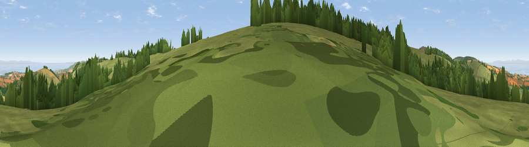

Viewpoint near Roadwater
#4978 in England · top 15% of its area beats it · near Roadwater · path 249 mWhere it is
The exact computed spot (ST 02962 34600). Click the marker for map links.
Public access: the nearest public right of way is about 249 m away — the final stretch may cross private land. Computed from Natural England's CRoW access layer and OpenStreetMap rights of way — not the legal definitive map. Always verify locally.
The view, rendered

A 360° render of this exact spot computed from the terrain model, tree cover and land cover — summer colours, afternoon light, calibrated against photographs of famous viewpoints. Real trees, hedges and buildings will differ in detail.
The panorama
Grey silhouette: terrain skyline in each direction (720 bearings, Earth curvature and refraction included). Dashed green: skyline with trees (+15 m) and buildings (+8 m) as obstacles. Blue strip: how far the ground is visible on each bearing.
Where the view opens
Wedge length = distance to the farthest visible ground on that bearing (vegetation-aware). Rings at 10, 25 and 50 km.
What fills the view
61% grassland · 23% woodland · 9% cropland · 7% water
Angular shares of the visible panorama (visual magnitude), not map area. Landscape diversity 0.46 (0–1 Shannon).
Key numbers
More beautiful places nearby
The staircase of upgrades: each row has a higher view potential than everything closer. Driving times are estimates from straight-line distance, calibrated against real road routing — check an actual route before setting out.
| Place | Direction | Drive | Score |
|---|---|---|---|
| Viewpoint near Roadwater | W · 1 km | ~3 min | 72.2 |
| Viewpoint near Roadwater | NW · 2 km | ~5 min | 82.9 |
| Viewpoint near Roadwater | NNE · 3 km | ~7 min | 83.6 |
| Viewpoint near Roadwater | NNE · 3 km | ~8 min | 84.2 |
| Viewpoint near Roadwater | NNW · 4 km | ~10 min | 85.2 |
| Viewpoint near Luxborough | NW · 7 km | ~14 min | 85.5 |
| Viewpoint near West Quantoxhead | NE · 11 km | ~22 min | 87.8 |
| Viewpoint near West Quantoxhead | NE · 11 km | ~22 min | 88.7 |
51.10246, -3.38732 · source: screening · position refined by local search. Computed location — check access rights before visiting.